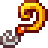

Curiosity Lure
| Curiosity Lure | |
|  | |
| Increases your chance to catch rare fish. | |
| Information | |
| Source | |
| Sell Price | |
The Curiosity Lure is a tackle that increases the chance to catch rare fish. Mummies in the Skull Cavern have a 1% chance to drop Curiosity Lure. It can also be dropped from some monsters as a special item in the Skull Cavern and the Quarry Mine, or as a drop from breaking boxes, crates, and barrels in the Quarry Mine, Skull Cavern, and the Volcano Dungeon.
It is one of two fishing tackles that cannot be crafted, along with the Lead Bobber. It is also one of two fishing tackles that cannot be bought from Willy's Fish Shop, along with the Quality Bobber.
Note that using two Curiosity Lures on an Advanced Iridium Rod provides no additional benefit as opposed to only using one.
Only the Iridium Rod or the Advanced Iridium Rod can equip tackle. The Iridium Rod can only attach one tackle at a time, while the Advanced Iridium Rod can attach two. To attach tackle, left-click on the tackle, then right-click on the rod. To remove tackle, first right-click to remove any bait, then right-click to remove the tackle. For an Advanced Iridium Rod, the left tackle will be the first one removed.
Tackle does not stack in inventory or chests; each tackle takes up one inventory slot.
Global Effects
While fishing in most locations with this lure equipped, all fish bite chances are increased. Since all chances are increased with equal proportion to their existing bite chance, this ultimately results in trash showing up slightly less often. Note that this effect only refers to the calculation for determining which fish bites: this lure does not affect the time it takes before a fish will bite.[1]
There are four types of fish that are given separate increases and are not part of the global effect described above: Legendary fish, the fish in the Mines, Night Market fish, and Waterfalls fish. This is because the spawn requirements for these fish are ignored in Data\Locations.xnb, or in the case of the Mines fish, the chances of hooking those fish are handled in the game code.
Specific Fish Affected by Type
As mentioned above, some fish are given separate bite rate increases not covered by the global effect. Assuming all requirements are met to hook it, the curiosity lure will improve the chance that the following fish will bite:
Legendary fish
- The chance of hooking a Crimsonfish increases to 25% from 18% when using a Curiosity Lure. This increase also applies to the Son of Crimsonfish.[2]
- The chance of hooking a Legend increases to 20% from 10% when using a Curiosity Lure. This increase also applies to the Legend II.[2]
- The chance of hooking a Mutant Carp increases to 20% from 10% when using a Curiosity Lure. This increase also applies to the Radioactive Carp.[2]
- The chance of hooking an Angler increases to 25% from 20% when using a Curiosity Lure. This increase also applies to the Ms. Angler.[2]
Fish in the Mines
- The base percentage chance to catch each fish depends on fishing zone and fishing level. The Curiosity Lure adds a static percentage increase to the chance to catch the fish. For the Stonefish, the chance increases by 5%. For the Ice Pip, the chance increases by 4.5%. For the Lava Eel, the chance increases by 4%.[3]
Night Market fish
- The chances of hooking a specific fish in the submarine ride at the Night Market, with and without a Curiosity Lure, can be found on the fishing submarine page. The chances of hooking a Spook Fish, Blobfish, Super Cucumber, and a Pearl increase when using a Curiosity Lure. Consequently, the chances of hooking everything else decrease.[2]
- The Curiosity Lure increases the chances of hooking each Night Market fish on The Beach with Magic Bait from 3.3% to 10.2%.[2]
Waterfall fish
- When using a Curiosity Lure, the chance of hooking a Goby increases by a static 15%.[2]
Fish Not Affected
In some cases, fish bite rates do not increase. This happens when the bite rate of the fish is handled in the game code and there is no code that suggests that there will be a higher bite rate with the lure.
- The chances of hooking a Glacierfish or Glacierfish Jr. do not increase when using a Curiosity Lure, despite being listed among the Legendary fish and Legendary fish II respectively.[2]
- The chances of hooking an Octopus do not increase when using a Curiosity Lure in the submarine ride at the Night Market, even though it's the fish with the lowest bite rate. With a Curiosity Lure equipped, the chance of hooking it decreases from 2.2% to 1.6%.[2]
Gifting
| Villager Reactions
| |
|---|---|
| Dislike | |
Bundles
The Curiosity Lure is not used in any bundles.
Quests
The Curiosity Lure is not used in any quests.
References
- ↑ See GameLocation::getFish in the game code. This reduction in trash rate is due to a global increase in each fish's bite chance (with trash being the default case when no fish bite).
- ↑ 2.0 2.1 2.2 2.3 2.4 2.5 2.6 2.7 2.8 See Data\Locations.xnb in the game files.
- ↑ See MineShaft::getFish in the game code.
History